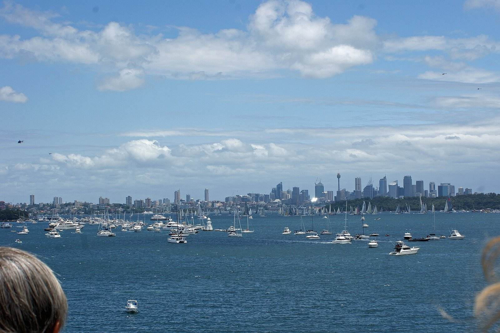

Sports · Other Sports
Rolex Sydney Hobart Yacht Race 2026
- Dates
- Venue
- Sydney Harbour (start)
- Location
- Sydney, Australia
- Format
- In-person
- Category
- Other Sports
- Industry
- Sailing
- Organiser
- Cruising Yacht Club of Australia
- Official website
- https://rolexsydneyhobart.com/
About
Start date is local civil date 26 December 2026 from Sydney Harbour. The race finishes in Hobart, Tasmania; this record is pinned at the official Sydney start. Elapsed finishing dates vary by boat and are not a single published end date.
Topics: offshore racing, sailing, Sydney Hobart.
No organiser attendance figure found on the official pages fetched 24 Nov 2026 for this upcoming edition. Ranked by our estimated size tier 'large' (30,000-100,000 attendees/visits), a judgement from format, venue and scale, not an official number.
Sources
- Official — https://rolexsydneyhobart.com/